Tutorial 4: Comparing LTM & CTM
Contents
- Disclaimer
- Introduction
- Loading the data
- Setup the simulation
- Visualize the demand in the network
- Compute the single-commodity Dynamic Network Loading
- Visualize the resulting densities and flows using XT diagrams
- Transform CVN values to travel times
- Compute the difference between both solutions
- Alternative coarser network coding for the LTM
- Setup the simulation
- Compute the single-commodity Dynamic Network Loading
- Visualize the resulting densities and flows using XT diagrams
- Transform CVN values to travel times
- Compute the maximum difference between both solutions
- Closing notes
Disclaimer
This file is part of the matlab package for dynamic traffic assignments developed by the KULeuven.
Copyright (C) 2016 Himpe Willem, Leuven, Belgium
This program is free software: you can redistribute it and/or modify it under the terms of the GNU General Public License as published by the Free Software Foundation, either version 3 of the License, or any later version.
This program is distributed in the hope that it will be useful, but WITHOUT ANY WARRANTY; without even the implied warranty of MERCHANTABILITY or FITNESS FOR A PARTICULAR PURPOSE. See the GNU General Public License for more details.
You should have received a copy of the GNU General Public License along with this program. If not, see http://www.gnu.org/licenses/.
More information at: http://www.mech.kuleuven.be/en/cib/traffic/downloads or contact: willem.himpe {@} kuleuven.be
Introduction
This tutorial illustrates the differences and similarities between the Link Transmission Model (LTM) and the Cell Transmission Model (CTM). The largest difference between both model are the solution variables. The LTM is formulated in terms of cumulative vehicle numbers at both link ends, while the CTM is formulated in terms of the density in each cell and the flow rates over the cell boundaries. Both models are first compared on a spatial grid of similar size. However, the LTM is able to consider a much larger spatial discretization without sacrificing numerical precision. On the contrary, the results are more precise for the same time step size.
%add these folders to the search path addpath('Dynamic Traffic Assignment','Visualization Tools','Network Data') %clear the work space clear %clear the command window clc %close all windows close all display('<<<Comparing LTM & CTM>>>')
<<<Comparing LTM & CTM>>>
Loading the data
The network represents a two-lane highway with vehicles moving from right to left. There are two on-ramps feeding additional traffic into the system. The demand pattern is chosen such that the most downstream merge forms a temporary bottleneck.
% Network and demand data load net1.mat % Plot the network plotNetwork(nodes,links,true,[]);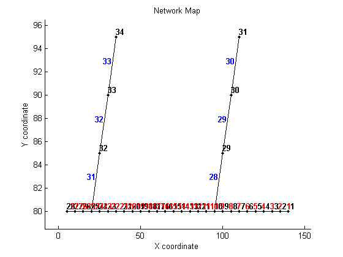
Setup the simulation
Before the simulation can be run the time interval has to be set and the total number of time steps has to be defined. These are used to transform the different origin-destination (OD-) matrices into a 3D-matrix. The time interval is bound by CFL-conditions. It can not be larger then the minimal travel time of the fastest kinematic wave in the network. The turning fractions have to be defined for each time interval. They are all equal to one because no diverges are present in this network.
%setup the maximal time interval and total number of time steps dt = min(links.length./links.freeSpeed); totT = 2/dt; %build the full ODmatrix [ODmatrix,origins,destinations] = buildODmatrix(ODmatrices,timeSeries,dt,totT); %initilize the Turning Fractions (easy if no diverges in the network) TF = num2cell(ones(size(nodes.id,1),totT)); for t=1:totT TF{10,t} = ones(2,1); TF{25,t} = ones(2,1); end clear t;
Visualize the demand in the network
The demand between every origin-destination combination is plotted for each time interval of the simulation.
figure; plot(dt*[0:totT-1],reshape(ODmatrix(1,1,:),1,[]),'d-b',dt*[0:totT-1],reshape(ODmatrix(2,1,:),1,[]),'.-r',dt*[0:totT-1],reshape(ODmatrix(3,1,:),1,[]),'x-g') legend('OD 1-28','OD 31-28','OD 34-28') xlabel('time (h)') ylabel('flow (veh/h)')

Compute the single-commodity Dynamic Network Loading
First the link transmission model is used to propagate the traffic over the network. Next the cell transmission model is used. Both models are composed of a link model and a node model which are consistent with first-order traffic flow theory with a triangular fundamental diagram. The node model is exactly the same for both models. The largest difference between both model are the solution variables. The LTM is formulated in terms of cumulative vehicle numbers at both link ends, while the CTM is formulated in terms of density in each cell and the flow rates over the cell boundaries.
display('Running LTM single-commodity on a detailed network') %run LTM tic [cvn_up,cvn_down] = LTM_SC(nodes,links,origins,destinations,ODmatrix,dt,totT,TF); toc display('Running CTM single-commodity') %run CTM tic [flows_up,flows_down,dens_n] = CTM_SC(nodes,links,origins,destinations,ODmatrix,dt,totT,TF); toc
Running LTM single-commodity on a detailed network Elapsed time is 5.101053 seconds. Running CTM single-commodity Elapsed time is 3.169199 seconds.
Visualize the resulting densities and flows using XT diagrams
The result of the link transmission model is expressed in cumulative vehicle numbers (CVN) for every links upstream and downstream end over the time domain. Flows and densities are computed in post processing phase as time and space derivates of these CVN functions. For the cell transmission model density and flow. Resulting densities and flows are depicted for both models in space-time (or XT) diagrams of the main road.
%Compute the simulated densities & flows for LTM [simDensity] = cvn2dens(cvn_up,cvn_down,totT,links); [simFlows_down] = cvn2flows(sum(cvn_down,3),dt); %Density allong the main road for LTM & CTM plotXT(links,1:27,simDensity,dt,totT); title('XT-graph of densities: LTM','FontSize',14,'fontweight','b') plotXT(links,1:27,dens_n,dt,totT); title('XT-graph of densities: CTM','FontSize',14,'fontweight','b') %Flow allong the main road for LTM & CTM plotXT(links,1:27,simFlows_down,dt,totT-1); title('XT-graph of flows: LTM','FontSize',14,'fontweight','b') plotXT(links,1:27,flows_down,dt,totT); title('XT-graph of flows: CTM','FontSize',14,'fontweight','b')
 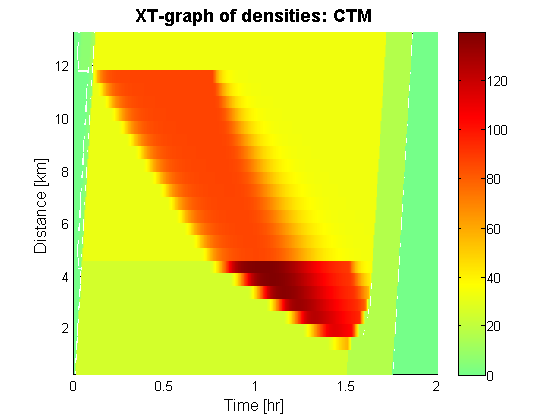 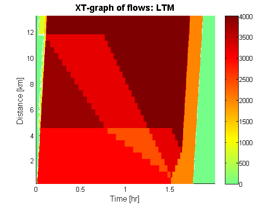 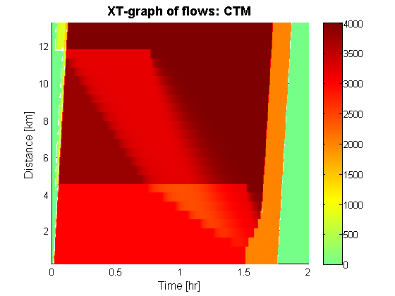
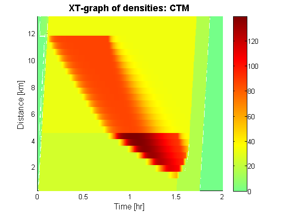 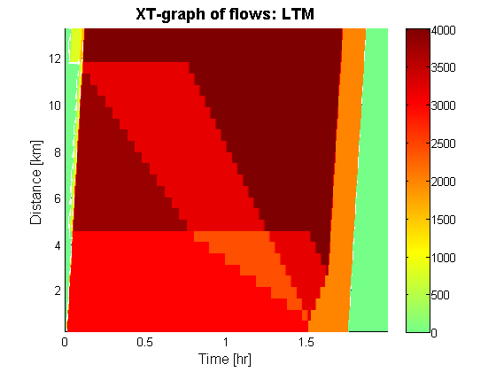 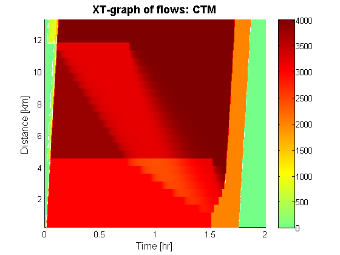 Transform CVN values to travel times
The upstream and dowsntream CVN functions of the link transmission model are transformed into travel times for every link in the network. This is compared to the travel time based on the density in each cell of the cell transmission model.
%calculate the simulated travel times for LTM & CTM [simTT] = cvn2tt(cvn_up,cvn_down,dt,totT,links); [simTT_c] = dens2tt(dens_n,totT,links); %visualize the travel time along the main route [~,~,~,tt]=plotTT(links,1:27,simTT,dt,totT); title('Travel time graph: LTM','FontSize',14,'fontweight','b') [~,~,~,tt_c]=plotTT(links,1:27,simTT_c,dt,totT); title('Travel time graph: CTM','FontSize',14,'fontweight','b') %compare both travel times figure; plot(dt*[0:totT],tt,'b',dt*[0:totT],tt_c,'r'); grid on legend('LTM','CTM') xlabel('Time [hr]','FontSize',12); ylabel('Travel Time [hr]','FontSize',12); title('Travel time graph','FontSize',14,'fontweight','b');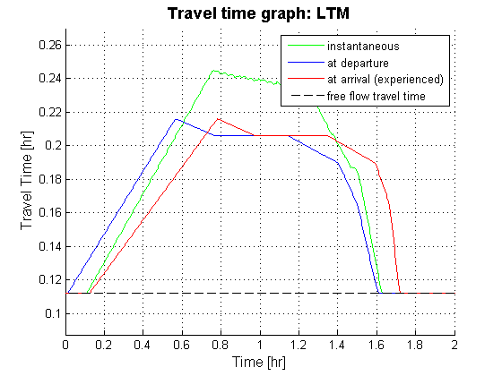 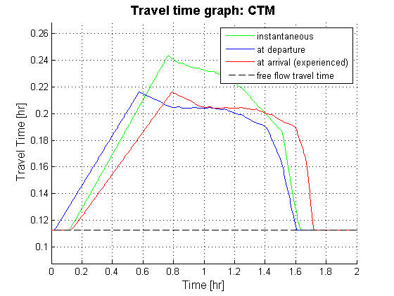 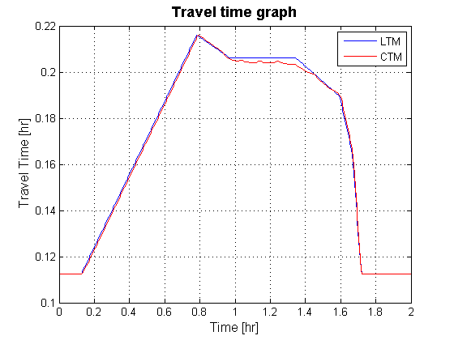
Compute the difference between both solutions
The following lines of code compare the output of both models in terms of difference in density and total travel time spend. The absolute difference in density of both solutions is also depicted in a space-time graph of the main road.
fprintf(1,'\n'); display('Comparing LTM & CTM on the same detailed network') display(['- maximum difference in density: ',num2str(max(max(abs(simDensity-dens_n)))),' veh/km']); display(['- average difference in density: ',num2str(sum(sum(abs(simDensity-dens_n)))/sum(sum(simDensity))),' veh/km']); totalTT = sum(sum(dt/2*(simDensity(:,1:end-1)+simDensity(:,2:end)),2).*links.length); totalTT_c = sum(sum(dt/2*(dens_n(:,1:end-1)+dens_n(:,2:end)),2).*links.length); display(['- absolute difference in total travel time spend: ',num2str(totalTT-totalTT_c),' veh*h']); %Main road plotXT(links,1:27,abs(simDensity-dens_n),dt,totT);
Comparing LTM & CTM on the same detailed network - maximum difference in density: 86.9165 veh/km - average difference in density: 0.055451 veh/km - absolute difference in total travel time spend: 0.06838 veh*h

Alternative coarser network coding for the LTM
The link transmission model is able to consider a much larger spatial discretization. This is illustrated by considering only the merges and boundaries of the detailed network as nodes. The resulting coarser network represents the largest spatial descretization that holds the original network structure. This not only reduces the spatial size and memory requirements but also the temporal resolution. It is now possible to choose a much larger time interval that still complies with CFL-conditions.
% Network and demand data load net3.mat % Plot the network plotNetwork(nodes,links,true,[]);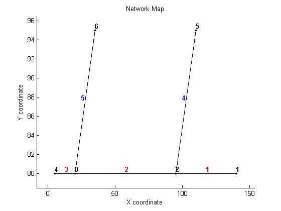
Setup the simulation
Before the simulation can be run the time interval has to be set and the total number of time steps has to be defined. The time interval is now three times larger and hence three times less time steps are required to cover the same simulation period as before.
%setup the time interval and total number of time steps dt_l = min(links.length./links.freeSpeed); totT_l = 2/dt_l; %build the full ODmatrix [ODmatrix_l,origins,destinations] = buildODmatrix(ODmatrices,timeSeries,dt_l,totT_l); %initilize the Turning Fractions (easy if no diverges in the network) TF_l = num2cell(ones(size(nodes.id,1),totT_l)); for t=1:totT_l TF_l{2,t} = ones(2,1); TF_l{3,t} = ones(2,1); end clear t;
Compute the single-commodity Dynamic Network Loading
The link transmission model propagates the traffic in the simulation. This is the same function as before.
fprintf(1,'\n'); display('Running LTM single-commodity on a coarser network') %run LTM tic [cvn_up_l,cvn_down_l] = LTM_SC(nodes,links,origins,destinations,ODmatrix_l,dt_l,totT_l,TF_l); toc
Running LTM single-commodity on a coarser network Elapsed time is 0.177283 seconds.
Visualize the resulting densities and flows using XT diagrams
The result of the link transmission model is transformed into flows and densities in the post processing phase. The resulting XT-graphs are produced with a simple rectangular grid which is now much less dens. The xt-plots now seem less precise. That is because, while LTM actually (implicitly) tracks the waves inside the long links, the postprocessed density is an average over the entire link, hence smoothens out the shock waves. However, travel times over the link are still as precise as before (see below). Also, if precise outputs of any x-location within the link is required, those can be postprocessed from the CVN’s (not shown in this tutorial).
%Compute the simulated densities & flows for LTM [simDensity_l] = cvn2dens(cvn_up_l,cvn_down_l,totT_l,links); [simFlows_down_l] = cvn2flows(sum(cvn_down_l,3),dt_l); %Density allong the main road for LTM (coarser network) plotXT(links,1:3,simDensity_l,dt_l,totT_l); title('XT-graph of densities: LTM (coarser network)','FontSize',14,'fontweight','b') %Flow allong the main road for LTM (coarser network) plotXT(links,1:3,simFlows_down_l,dt_l,totT_l-1); title('XT-graph of flows: LTM (coarser network)','FontSize',14,'fontweight','b')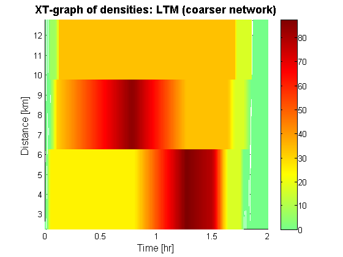 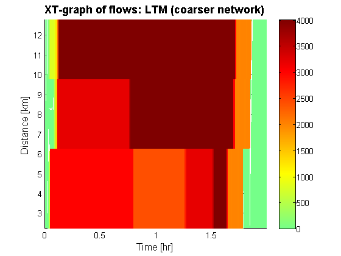
Transform CVN values to travel times
The upstream and dowsntream CVN functions of the link transmission model are transformed into travel times for every link in the network. This is compared to the travel times produced by the LTM on the more more detailed network.
%calculate the simulated travel times for LTM (coarser network) [simTT_l] = cvn2tt(cvn_up_l,cvn_down_l,dt_l,totT_l,links); %visualize the travel time along the main route [~,~,~,tt_l]=plotTT(links,1:3,simTT_l,dt_l,totT_l); title('Travel time graph: LTM','FontSize',14,'fontweight','b') %compare both travel times figure; plot(dt*[0:totT],tt,'b',dt_l*[0:totT_l],tt_l,'r-.'); grid on legend('Detailed Network','Coarse Network') xlabel('Time [hr]','FontSize',12); ylabel('Travel Time [hr]','FontSize',12); title('Travel time graph: LTM','FontSize',14,'fontweight','b');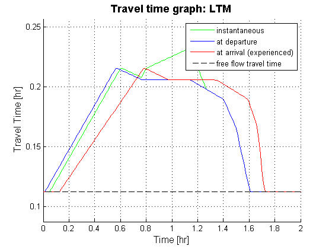 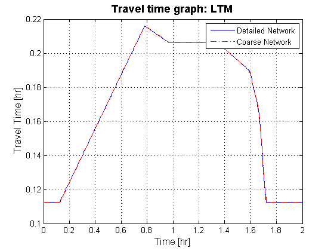
Compute the maximum difference between both solutions
The following lines of code compare the output of both networks in terms of difference in total travel time spend.
fprintf(1,'\n'); display('Comparing both LTM solutions') totalTT_l = sum(sum(dt_l/2*(simDensity_l(:,1:end-1)+simDensity_l(:,2:end)),2).*links.length); display(['- absolute difference in total travel time spend: ',num2str(totalTT-totalTT_l),' veh*h']);
Comparing both LTM solutions - absolute difference in total travel time spend: -0.013889 veh*h
Closing notes
- Note how in the larger network results are as precise as before although memory requirements and computational effort are lower.
- The LTM is inherently more accurat than the CTM. The additional smoothing of the CTM can even be analytically expressed by a numerical relaxation term.